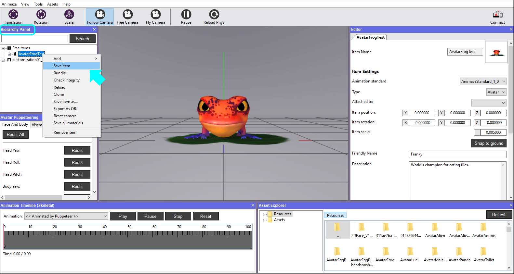

How can I import a custom 3D Avatar in the Animaze Editor?
In this guide, we will use the source files of a test avatar, named AvatarFrogTest, that you can download here. The sample folder contains 2 directories (Animations, Textures) and the *.fbx file exported from the modeling software the avatar was created in.
Note that this files folder structure is mandatory for the import process:
1. *.fbx geometry name the same as the folder name
2. Textures (.tga, .png, .jpg files) go in Textures/ folder
3. Animations (skeletal animations exported as solo .fbx files)
To ease asset management and make it clear what each asset's role is (i.e. avatar, prop or background), we are using a simple naming convention system that prefixes the asset type to the name of the assets. Here are the three examples:
* AvatarName - for avatars
* PropName - for props
* BackgroundName - for backgrounds
Now follow these steps to begin importing your model:
1. Download the AvatarFrogTest archive using the provided link above and extract the files inside.
2. Open the Animaze Editor, navigate to Assets and select Import 3D Object.

3. Open the model's geometry file, the .fbx file, from the location you downloaded the files.

4. The following window prompts you to select the files you want to import. If this is your first time importing a specific model, make sure all the files are marked and select the item type from the dropdown list before clicking Import.

5. A report of Import issues will be displayed after the Animaze Editor checks the files for issues. The warning system checks for skeletal animations. The frog has both skeletal and blendshape animations.
The Required animation not found will be displayed when the corresponding skeletal animation is not found in the source files. This warning will trigger even if there is a valid Blendshape that fills the role of the missing skeletal animation. When using blendshapes instead of animations, that warning message can be ignored, like in this case. Click X to dismiss the window.
The avatar will still be functional using only the animation found at import.

6. Next there's a verbose log that gets prompted for every import, hit the Ok button to dismiss. As you work on more complicated models, these logs will surface errors and help you with debugging.

7. Once the avatar is imported, it will be visible in the Viewport. Click on it in the Hierarchy Panel to display its details (icon, type, name, position etc) in the Editor Panel (right side).

8. Save item in the Hierarchy Panel as a final step.

That’s it, the import is done. :)